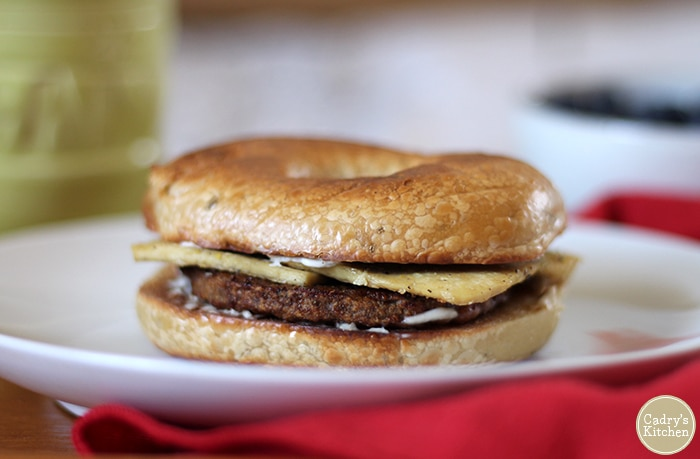

Favorite Meal

Description
A quick and easy vegetarian meal for any time of day.
Ingredients
- Bagel
- Egg
- Cheese (optional)
- Vegan bratwurst
- Mustard
- Everything but the Bagel Seasoning
Steps
- Heat nonstick pan over medium heat
- Toast bagel.
- Cut veggie brat into quarters and place on skillet.
- Oil skillet and crack egg to cook over medium.
- Once egg is flipped, put cheese on egg.
- Dress toasted bagel as you see fit.
- Top bagel with veggie brat quarters and egg
- Smush together
- Enjoy!